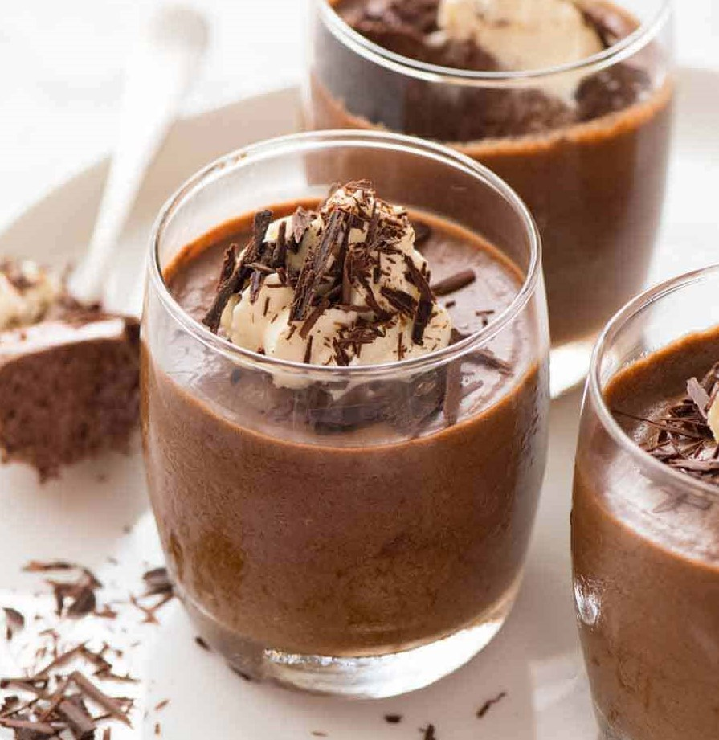

BakeHub
Danielle's Favorite Baking Recipes
Smooth Dark Chocolate Mousse

This is a perfect dessert to whip up if you love chocolate!
Difficulty: Medium
Ingredients:
- 3 tablespoons of unsalted butter
- 6 ounces of the best quality semi-sweet chocolate
- 3 large eggs
- 4 ripe bananas
- 0.5 teaspoon of cream of tartar
- 0.25 cup plus 2 tablespoons of granulated sugar
- 0.5 cup of cold heavy cream
- 1 teaspoon of vanilla extract
Directions:
- Put the butter and chocolate in a heatproof bowl. Place the bowl on a double-boiler. Stir with a spatula until the chocolate is melted and the mixture is completely smooth.
- Allow the melted chocolate/butter mixture to cool for a few minutes. In the meantime, separate the 3 eggs' whites and yolks into separate bowls.
- Once a few minutes have passed, whisk in the egg yolks one at a time until fully incorporated into the chocolate mixture.
- Using an electric hand mixture, beat the egg whites on medium speed until foamy. Add in the cream of tartar and beat on medium-high speed until soft peaks form. Begin to incorporate 0.25 cup of sugar until stiff peaks form (the egg whites should maintain a stiff point when the mixer is lifted from the bowl).
- Using a spatula, fold the egg white mixture into the chocolate mixture. Set aside.
- In a separate bowl, beat the heavy cream on medium-high speed with an electric mixer until the cream thickens. Add in the remaining 2 tablespoons of sugar and the vanilla. Continue beating until medium peaks (do not over mix).
- Fold the whipped cream into the chocolate mixture. Be sure to fully combine the two mixtures together, but do not over fold because it will remove air from the mousse.
- Scoop the mousse mixture into 6 individual glasses. Cover the glasses and chill them in the refrigerator for at least two hours.
- Once fully chilled, enjoy the mousse!
Recipe adapted from OnceUponAChef